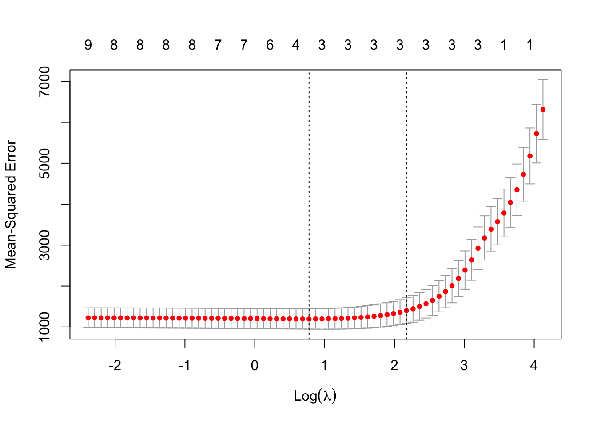

We have used hypothesis testing for inference: learning about the process that generated the data, in particular, whether or not particular variables are associated with the dependent variable of interest.
A related, but different problem is to find the best statistical model we can for predicting the value of the dependent variable on any occasion. Rather than understanding the data we have, the interest is in how the model would perform in predicting new data. Hence for inference, we can do our analysis on the whole dataset, but for prediction, if we want to evaluate the performance of our model, we might need to hold back some of the data for testing.
Hypothesis testing can still play a role in the prediction problem: if we find a particular term in a model is not significantly different from zero, we wouldn’t expect it to be useful for the prediction task, but hypothesis testing cannot compare non-nested models
For example, suppose we want to know which of the two following models is best for predicting the \(Y\) variable: \[
Y_i = \beta_0 + \beta_1 x_i+\varepsilon_i,
\] or \[
Y_i = \alpha_0 + \alpha_1 z_i+\delta_i,
\] We might want to choose one if there is a cost to obtaining each of the \(x\) and \(z\) variables, and we want to minimise the cost. The models are not nested, so we cannot make the choice using a hypothesis test.
With large numbers of independent variables, it is more likely we would want to compare non-nested models. There are also computational issues if there is a large number of candidate models to compare, and if we have \(p\) candidate regressor variables and \(n\) observations, with \(n<p\), we may not even be able to fit a model with all regressor variables included.
9.2 Bias-variance decomposition and trade-offs
Warning
It is possible for a more complicated model to give worse predictions than a simpler one!
Consider predicting some future observation \(Y^*\) given \(\boldsymbol{x}^*\), which we write as \[
Y^* = f(\boldsymbol{x}^*) + \varepsilon^*,
\] where \(\mathbb{E}(\varepsilon^*)=0\) and \(Var(\varepsilon^*) = 0\). We predict \(Y^*\) with \(\hat{f}(\boldsymbol{x}^*)\), where \(\hat{f}(\boldsymbol{x}^*)\) is our estimate of \(f(\boldsymbol{x}^*)\), and we write \(\hat{f}:=\hat{f}(\boldsymbol{x}^*)\) and \(f:=f(\boldsymbol{x}^*)\) for short. For a linear model, we would normally use least squares to obtain \(\hat{f}\).
Before observing the data for which we will obtain \(\hat{f}\), we consider the expected squared error of our estimator:
\[
\mathbb{E}((Y^*-\hat{f})^2) = \mathbb{E}((f+\varepsilon^*-\hat{f})^2).
\] The expectation is with respect to both the random error \(\varepsilon^*\) and the random data used to obtain \(\hat{f}\). We now define \[
\mu_f:=\mathbb{E}(\hat{f})
\] to be the expected value of the estimator \(\hat{f}\), so that if \(\mu_f - f\) is the bias of the estimator \(\hat{f}\). Then \[\begin{align}
\mathbb{E}((f+\varepsilon^* - \hat{f})^2)& = \\
& = \mathbb{E}((\varepsilon^* + f-\mu_f+ \mu_f- \hat{f})^2)\\
& = \mathbb{E}({\varepsilon^*}*^2) + \mathbb{E}((f-\mu_f))^2) + \mathbb{E}((\hat{f}-\mu_f)^2)\\
&= \sigma^2 + \mbox{bias}^2 + Var(\hat{f}).
\end{align}\]
Note
To derive this result, note that (1) the random terms in \((f+\varepsilon^* - \hat{f})^2\) are \(\varepsilon^*\) and \(\hat{f}\), (2) that \(\varepsilon^*\) is independent of \(\hat{f}\) and has expectation 0, and (3), that \[
\mathbb{E}((f-\mu_f)(\mu_f- \hat{f})) = (f-\mu_f)(\mu_f- \mathbb{E}(\hat{f})) = 0,
\] as \(\mu_f:=\mathbb{E}(\hat{f})\).
Hence there are three terms that contribute to the expected squared prediction error for a future observation:
the (‘irreducible’) random error term corresponding to that observation;
the bias (squared) in estimating \(f\) with \(\hat{f}\);
the variance of the estimator \(\hat{f}\).
More complex models tend to have smaller bias, but larger variance: smaller bias because the additional complexity means we can the model can get closer to the true function \(f\); larger variance because there will typically be more parameters to estimate and so \(\hat{f}\) is more sensitive to variation in the data.
For prediction purposes, we should consider this trade-off between bias and variance, given that they both contribute to prediction error, and note that a simpler model can be preferable to a more complex one, if the reduction in variance outweighs the increase in bias.
9.3 Measuring goodness of fit and penalising for model complexity
For choosing between different models, various measures of goodness of fit have been proposed, that include a penalty for the complexity of the model.
9.3.1 The adjusted \(R^2\) statistic
We introduced this in Chapter 2, but will recap here. For \(n\) observations and \(p\) parameters in the model (i.e. \(\boldsymbol{\beta}\) is a \(p\times 1\) vector)
\[
R^2(adj):=1-\frac{RSS}{SS_{total}}\times\frac{n-1}{n-p}
\] where \(RSS= \sum_{i=1}^n(y_i - \hat{y}_i)^2\) is the residual sum of squares, and \(SS_{total}= \sum_{i=1}^n(y_i - \bar{y})^2\) is the total sum of squares.
\(R^2(adj)\) increases (to an upper bound of 1) as the goodness of fit improves. Smaller squared residuals imply a better fitting model and increase \(R^2(adj)\), but \(R^2(adj)\) is reduced as the number of parameters \(p\) increases.
9.3.2 AIC and BIC
There are general purpose goodness of fit measures that involve the maximised log-likelihood: AIC and BIC are two of them. Informally, the likelihood is the ‘probability’ of observing the data we got, as a function of the model parameters, so the higher we can make this (by maximising the likelihood or log-likelihood), the closer the data would ‘fit’ the model.
Denote the maximised log-likelihood by \(\hat{l}\). Then Akaike’s Information Criterion (AIC) is defined as
\[
AIC:= -2\hat{l} + 2p
\] and the Bayesian Information Criterion (BIC) is defined as \[
BIC: = -2\hat{l} + n\log p
\]
Note that the lower the AIC and BIC values, the better the model fit. We see that AIC and BIC differ in the penalty applied for model complexity: the penalty of \(n\log p\) in BIC grows with sample size, so BIC is more likely to favour simpler models.
Under various assumptions and approximations, AIC and BIC can be interpreted as estimating different quantities. The details are outside the scope of this module, but in brief AIC approximates how well the fitted model predicts a new observation, as measured by the Kullback-Liebler divergence between the true distribution of a new observation and the distribution in the fitted model. BIC approximates the log marginal likelihood of the observed data (the likelihood, averaged over a prior distribution for the model parameters.)
We can obtain AIC and BIC values with the commands AIC() and BIC() on fitted models in R.
9.3.3 Example
We’ll use the respiration data again, but recode the data to make it easier to understand
# A tibble: 6 × 8
vol exercise pulse pollution asbestos home smoke asthma
<dbl> <dbl> <dbl> <dbl> <fct> <fct> <fct> <fct>
1 117. 15.8 17.5 11.9 Yes England Yes No
2 148. 23.5 28.4 1.88 Yes Wales Yes Yes
3 214. 13.8 15.0 2.38 Yes England No No
4 162. 15.6 15.7 6.34 Yes Wales No Yes
5 352. 26.6 19.7 1.63 No Northern_Ireland No No
6 304. 23.2 14.2 2.72 No Northern_Ireland No No
If we fit a model with all the independent variables, we can see that both smoke and asthma are significant, but the effect size is larger for smoke.
If we were to compare two models, one using smoke only and one using asthma only as the independent variable, we might expect the former to fit better as its coefficient is larger. We’ll compare \(R^2_{adj}\), AIC and BIC values to confirm this.
We will finish with a brief mention of some alternative methods for model fitting/selection that attempt to reduce prediction errors by reducing model complexity. We will just outline some methods, and then illustrate how to implement them in the Chapter appendix.
Note
This really is a very brief introduction to the topic! The aim is just to get you started if you want to experiment with any of these methods at some later point. You will not be assessed on any of the following.
The idea is to minimise the residual sum of squares, subject to a constraint on the complexity of the model. We suppose there is a ‘full model’ we are willing to consider in matrix form \[
\boldsymbol{Y} = X\boldsymbol{\beta}+\boldsymbol{\varepsilon}.
\] Here, we write \[
\boldsymbol{\beta} = \left(\begin{array}{c}\beta_0\\\beta_1\\\vdots\\ \beta_p\end{array}\right)
\]
and suppose that the first column of \(X\) a column of 1s, so that the first element \(\beta_0\) of \(\boldsymbol{\beta}\) is just an intercept term. Define \(\boldsymbol{y}\) to be the observed value of \(\boldsymbol{Y}\).
For ordinary least squares, we have \[
\hat{\boldsymbol{\beta}} = \arg\min_{\boldsymbol{\beta}}\left((\boldsymbol{y} - X\boldsymbol{\beta})^T(\boldsymbol{y} - X\boldsymbol{\beta})\right),
\] which we can solve analytically to get \(\hat{\boldsymbol{\beta}} = (X^TX)^{-1}X^T\boldsymbol{y}\).
An alternative approach is, given the same model\(\boldsymbol{Y} = X\boldsymbol{\beta}+\boldsymbol{\varepsilon}\), place some constraint on \(\boldsymbol{\beta}\) when minimising \((\boldsymbol{y} - X\boldsymbol{\beta})^T(\boldsymbol{y} - X\boldsymbol{\beta})\). We will give three possibilities below.
9.4.1 Best subset selection
In this approach, we find the best fitting model (using least squares) out of all models with some reduced number \(k\) of regressors:
\[
\hat{\boldsymbol{\beta}}_{S} := \arg\min_{\boldsymbol{\beta}}\left((\boldsymbol{y} - X\boldsymbol{\beta})^T(\boldsymbol{y} - X\boldsymbol{\beta})\right), \quad\mbox{ subject to } \left(\sum_{j=1}^p I(\beta_j\neq 0)\right) = k.
\] i.e., in addition to the intercept, only \(k<p\) elements of \(\boldsymbol{\beta}\) are allowed to be non-zero.
9.4.2 Ridge regression
Rather than forcing elements of \(\boldsymbol{\beta}\) to be zero, we can shrink them towards zero. This introduces bias into \(\hat{\boldsymbol{\beta}}\), but reduces the variance, potentially with an overall reduction in expected prediction error. We have
\[
\hat{\boldsymbol{\beta}}_{R}: = \arg\min_{\boldsymbol{\beta}}\left((\boldsymbol{y} - X\boldsymbol{\beta})^T(\boldsymbol{y} - X\boldsymbol{\beta})\right), \quad\mbox{ subject to } \left(\sum_{j=1}^p \beta_j^2\right)\le t
\]
Warning
For the constraint to make sense, columns 2 to \(p\) of \(X\) need to be on the same scale, e.g. transformed to be on the range \([-1, 1]\).
Note that \(\hat{\boldsymbol{\beta}}_{R}\) can be re-expressed as
\[
\hat{\boldsymbol{\beta}}_R = \arg\min_{\boldsymbol{\beta}}\left( (\boldsymbol{y} - X\boldsymbol{\beta})^T(\boldsymbol{y} - X\boldsymbol{\beta}) +\lambda \sum_{j=1}^p \beta_j^2\right).
\] We can now see that ridge regression is a form of penalised least squares: we are minimising the sum of the squared errors plus an additional penalty for the size of the regression coefficients. Informally, this can also be thought of similar to a Bayesian approach, where each \(\beta_j\) coefficient is given a \(N(0,\lambda)\) prior.
9.4.3 Lasso
Lasso is short for “least absolute shrinkage and selection operator”. It’s similar to ridge regression, but with a different penalty. We find
\[
\hat{\boldsymbol{\beta}}_{L}: = \arg\min_{\boldsymbol{\beta}}\left((\boldsymbol{y} - X\boldsymbol{\beta})^T(\boldsymbol{y} - X\boldsymbol{\beta})\right), \quad\mbox{ subject to } \left(\sum_{j=1}^p |\beta_j|\right)\le t
\]
which can be re-expressed as \[
\hat{\boldsymbol{\beta}}_L = \arg\min_{\boldsymbol{\beta}}\left( (\boldsymbol{y} - X\boldsymbol{\beta})^T(\boldsymbol{y} - X\boldsymbol{\beta}) +\lambda \sum_{j=1}^p |\beta_j|\right).
\] Note that the independent variables need transforming such that the columns of \(X\) are on the scale.
Note
Lasso also ‘shrinks’ the \(\beta\) coefficients towards 0, but more ‘aggressively’, as for \(|\beta_j|<1\) the penalty \(\lambda|\beta_j|\) is greater than the penalty \(\lambda\beta_j^2\). This has the effect of performing variable selection.
9.4.4 Parameter choices
For the best subset selection method, we have to choose \(k\). Each value of \(k\) results in a particular ‘best’ model as found by least squares; we might choose the best overall \(k\) value by using any goodness of fit measure which includes a penalty for model complexity, such as AIC, BIC etc.
For ridge regression and the Lasso, we have to choose a parameter \(\lambda\). One approach is to use cross-validation which involves removing a subset of observations, fitting the model to the remainder, and then predicting the observations we removed. We won’t give the details here, but this topic is covered in the Computational Methods course (second half of MAS61006)
9.5 Chapter appendix
We outline how to implement each of the above penalised regression methods in R
9.5.1 Best subset selection with leaps
Best subset selection can be implemented with the leaps package 1. The following command will find the best fitting regression model for \(k\) taking values from 1 up to nvmax
The terms included for each \(k\) can be visualised with the following plot. We would look to see which terms are included in the top row, as this has the smallest BIC:
plot(lmBestSubset)
We can extract the BIC values and best model as follows:
Note that we don’t need to standardise the columns of X: glmnet will do this for us. There is a single function we can use for both ridge regression and the lasso; an argument alpha determines which penalty is used. The function will automatically try a range of suitable \(\lambda\) values.
lmLasso <- glmnet::glmnet(x = X, y = y, alpha =1) # alpha = 1 for the lassolmRidge <- glmnet::glmnet(x = X, y = y, alpha =0) # alpha = 0 for ridge regression
We can see the shrinkage of the coefficients towards 0 as \(\lambda\) increases. The numbers at the top show the number of non-zero \(\beta_j\) coefficients. For the lasso we do
plot(lmLasso, xvar ="lambda")
Similarly for ridge regression:
plot(lmRidge, xvar ="lambda")
To choose a particular value of \(\lambda\), we do cross-validation. This is implemented as follows.
lmLassoCV <- glmnet::cv.glmnet(x = X, y = y, alpha =1)lmRidgeCV <- glmnet::cv.glmnet(x = X, y = y, alpha =0)
A recommendation is to choose \(\lambda\) that gives a mean-squared prediction error within one standard error of the minimum. This is indicated by the right hand vertical dotted line in the following plot.
plot(lmLassoCV)

and extracted as follows:
lmLassoCV$lambda.1se
[1] 7.289264
Similarly for ridge regression.
plot(lmRidgeCV)
lmRidgeCV$lambda.1se
[1] 25.0056
Finally, we compare coefficients using ordinary least square, the lasso, and ridge regression.
A . indicates a coefficient set to 0 in the lasso, which we can think of as variable selection. In this example, this is the same as the coefficients that are not significantly different from 0 in the full model. Note also how (intercept excluded), the coefficients are typically closer to 0 for the lasso and ridge regression models, compared to the full model.
Thomas Lumley based on Fortran code by Alan Miller (2020). leaps: Regression Subset Selection. R package version 3.1. https://CRAN.R-project.org/package=leaps↩︎
Friedman J, Tibshirani R, Hastie T (2010). “Regularization Paths for Generalized Linear Models via Coordinate Descent.” Journal of Statistical Software, 33(1), 1-22. doi: 10.18637/jss.v033.i01 (URL: https://doi.org/10.18637/jss.v033.i01).↩︎